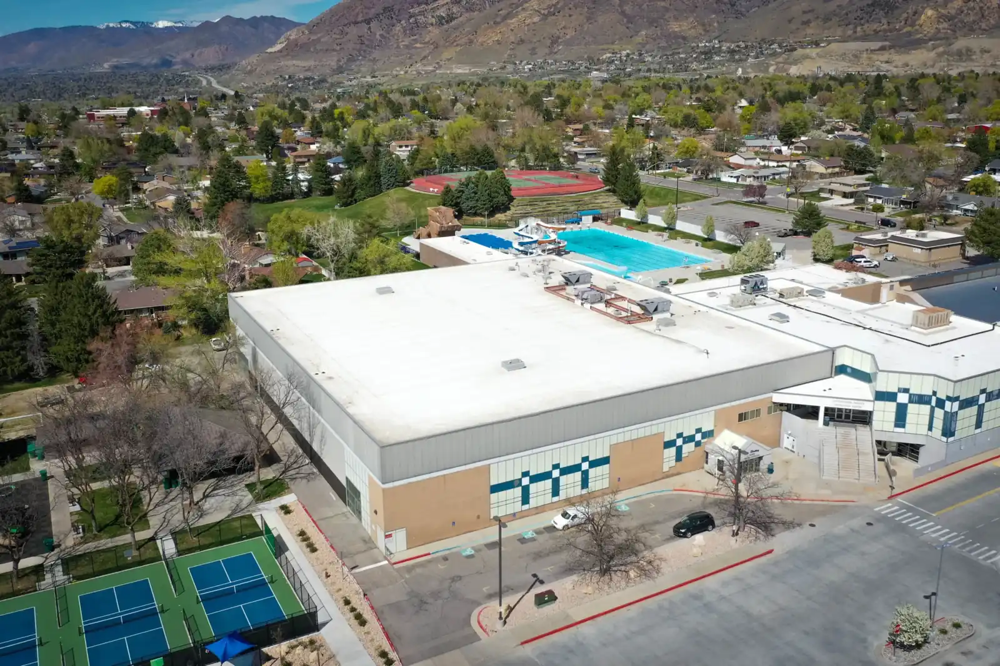
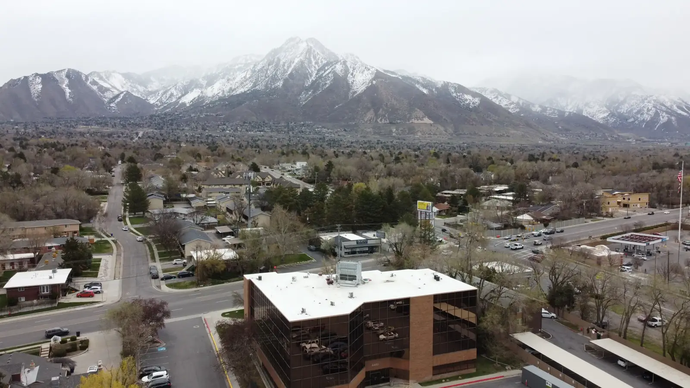
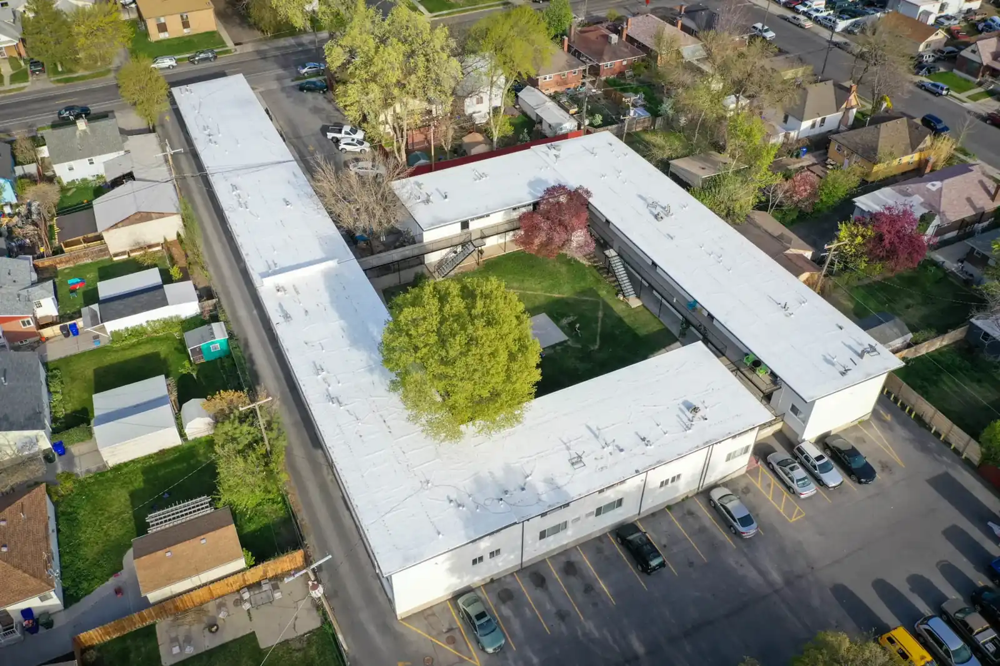

Pioneer Roofing Co · Salt Lake City, Utah
Salt Lake City roofing company. Since 1980.
Pioneer Roofing is a family run roofing company in Salt Lake City, roofing homes and businesses along the Wasatch Front and throughout Utah since 1980. Repairs or a complete replacement, in asphalt shingles, TPO, PVC or metal.
Call the owner
Your call goes straight to John
No recordings. No outsourced answering service. When you call Pioneer Roofing, you talk to the owner.
(801) 943-7663Or email John@pioneerroofer.com
Six reasons to choose us
- Quick responseOur service number goes directly to our owner, John. No recordings or outsourced answering services, guaranteed.
- TrustedThousands of jobs completed to our customers’ satisfaction.
- Trained workersEvery job has workers with 10+ years of experience.
- Quality materialsOnly the highest quality materials on our roofs.
- WarrantiesWe offer warranties on every roof.
- Transparent pricing100% transparent quotes, and real price ranges published on our site.
Transparent pricing
What new roofs actually cost
Most roofs don’t have a fixed price, because cost depends on size, material, condition, access and what turns up during inspection. That doesn’t mean you should be left guessing.
| Typical 2,000 sq. ft. home | Last 12 months |
|---|---|
| Asphalt replacement, straightforward | $9,100–$12,600 |
| Asphalt replacement, complex or premium | $13,400–$16,600 |
| TPO / flat membrane roof | $13,100–$16,300 |
| Roof repair, basic | $250–$1,000 |
| Roof repair, advanced | $1,100–$2,000 |

Project gallery
Roofs we’ve built around the valley
Homes, warehouses, apartment buildings and a rec center. See the gallery.






- Cottonwood HeightsAsphalt roofing
- DraperAsphalt roofing
- North Salt LakeAsphalt roofing
- Highland TowerCommercial TPO membrane
- Cottonwood Heights Rec CenterCommercial TPO membrane
- TPO West Jordan WarehouseCommercial TPO membrane
- TPO South JordanCommercial TPO membrane
- TPO Industrial Building SLCCommercial TPO membrane
- TPO Warehouse RivertonCommercial TPO membrane
Reviews
What our customers say
John is a up stand guy, he was willing to work with me on a home roof repair inspection even with snow on the roof and with relative short notice.
They redid my flat roof on my very old building with TPO, capping and shingles/flashing on the bay windows. Working with these guys was the best of my experience working with roofers.
Mason was amazing and very professional! We will definitely have this business again once we are ready to replace our roofing!
Areas we serve
Salt Lake, the Wasatch Front and beyond
We work in Salt Lake, along the Wasatch Front and throughout the state of Utah, from our offices in Salt Lake City and Price.
7041 S 2700 E, Salt Lake City, UT 84121
106 N 4th E, Price, UT 84501
Questions
Straight answers
From the blog:
- What Is the 25% Rule for Roofing?
- How to Tell When Your Roof Needs Repair or Replacement
- Benefits of Metal roofs
How much does a new roof cost in Salt Lake City?
Our real price ranges for a typical 2,000 sq. ft. home in Salt Lake City and the Wasatch Front over the last 12 months: $9,100–$12,600 for a straightforward asphalt replacement, $13,400–$16,600 for a complex or premium asphalt roof, and $13,100–$16,300 for a TPO or flat membrane roof. See the pricing page for what moves the price.
Who answers when I call?
Our service number goes directly to our owner, John. No recordings or outsourced answering services.
Do you help with insurance claims?
Yes. After a major storm, insurance companies will often require an inspection by a roofing professional. We’re fully licensed and insured, and we can help with the claims process by assessing your home after the damage.
What warranty do you offer?
We offer a 10-year labor warranty in addition to the lifetime warranty on the materials we use, and we stand by every job. Ask us about the warranty for your specific roof type.
Do you do commercial roofs?
Yes. For flat roofs we specialize in membrane roofing such as TPO and PVC. For pitched roofs we install asphalt shingles, metal panels and wood shake shingles, and we remove and dispose of existing roof layers.
Since 1980
Get a straight answer on your roof
Call John directly, get an instant estimate online, or book an inspection. Transparent pricing on every quote.